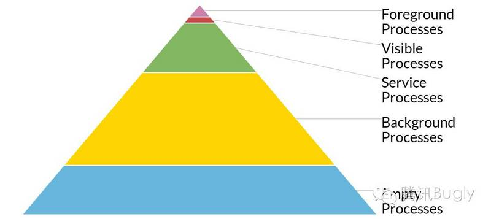
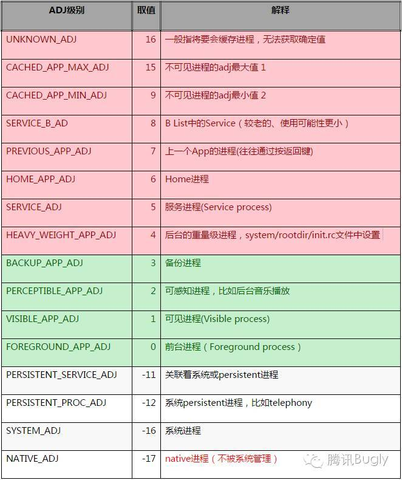
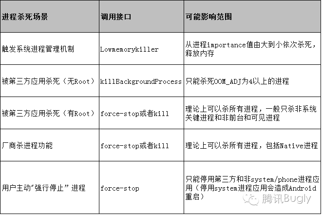

前言
Android 系统为了保持系统运行流畅，在内存吃紧的情况下，会将一些进程 kill ，以释放一部分内存。然而，对于一些（如：IM-QQ 、微信，支付-支付宝等）比较重要、我们希望能及时收到消息的 APP，需要保持进程持续活跃，那么就需要实施一些保活措施来保证进程能够持续存活，即 Android 进程保活。
Android 进程拉活包括两个层面：
提供进程优先级，降低进程被杀死的概率
在进程被杀死后，进行拉活
在此之前，先来了解下 Android 进程的一些相关概念。
进程
默认情况下，同一 APP 的所有组件均运行在相同的进程中，但是也可以根据需要，通过在清单文件中配置来控制某些组件的所属进程。
内存不足的情况下，Android 系统会选择 kill 某一进程来释放该进程占用的内存，供其它为用户提供更为紧急服务的进程使用。在被关闭的进程中运行的组件也会随着进程的关闭而销毁。
决定 kill 哪个进程时，Android 系统将权衡所有进程对用户的相对重要程度。例如：相对于托管可见 Activity 的进程而言，更有可能 kill 托管不可见 Activity 的进程。因此，是否终止 kill 某个进程取决于该进程中所运行组件的状态。
进程的优先级
Android 系统将尽量长时间地保持应用进程，但为了新建进程或运行更重要的进程，最终需要清除旧进程来回收内存。 为了确定保留或终止哪些进程，系统会根据进程中正在运行的组件以及这些组件的状态，将每个进程放入“重要性层次结构”中。 必要时，系统会首先消除重要性最低的进程，然后是清除重要性稍低一级的进程，依此类推，以回收系统资源。
进程的重要性，划分5级：
- 前台进程 (Foreground process)
- 可见进程 (Visible process)
- 服务进程 (Service process)
- 后台进程 (Background process)
- 空进程 (Empty process)

前台进程的重要性最高，依次递减，空进程的重要性最低，下面分别来阐述每种级别的进程
前台进程
用户当前操作的进程。一个进程满足以下任一条件 ，即视为前台进程：
- 托管用户正在交互的 Activity（已调用 onResume() 方法）。
- 托管某个 Service ，且 Service 绑定到用户正在交互的 Activity。
- 托管正在“前台”运行的 Service（服务已调用startForeground()）。
- 托管正在执行生命周期回调的 Service（ onCreate() 、 onStart() 或 onDestory() ）。
- 托管正在执行 onReceive() 方法的 BroadcastReceiver。
通常，任意时间的前台进程数据都不多。只有在内存不足以支持它们同时继续运行这一万不得已的情况下，系统才会 kill 它们。
可见进程
没有任何前台组件、但仍会影响用户在屏幕上所见内容的进程。 如果一个进程满足以下任一条件，即视为可见进程：
- 托管不在前台、但仍对用户可见的 Activity（已调用 onPause() 方法）。如：前台 Activity 启动了一个对话框，允许在其后面显示上一个 Activity。
- 托管绑定到可见（或前台）的 Activity 的 Service。
可见进程被视为及其重要的进程，除非为了维持所有前台进程同时运行而必须终止，否则系统不会kill这些进程。
服务进程
正在运行已使用 startService() 方法启动的 Service 且不属于上述两个更高类别进程的进程。
尽管服务进程与用户可见内容没有直接关联，但是它们通常在执行一些用户比较关心的操作（如：在后台播放音乐或从网络下载数据等），因此，除非内部不足以维持所有前台进程和可见进程同时运行，否则系统不会 kill 这些进程。
后台进程
托管目前对用户不可见的 Activity 的进程（已调用 Activity 的 onStop() 方法）。
后台进程对用户体验没有直接影响，系统可能随时会 kill 它们，以回收内存提供给前台进程、可见进程、服务进程使用。通常会有很多后台进程同时运行，系统将它们保存在 LRU（最近最少使用）列表中，以确保包含用户最近查看的 Activity 的进程最后一个被终止。
空进程
不包含任何活动组件的进程。
保留这种进程的唯一目的是缓存，以缩短下次在其中运行的组件的启动时间。为使系统总体资源在进程缓存和底层内核缓存之间保持平衡，系统往往会kill这些进程。
根据进程中当前活动的组件的重要程度，Android 系统会将进程评定为可能达到的最高级别。比如，托管服务和可见 Activity 的进程，系统会将其评定为可见进程，而不是服务进程。
此外，一个进程的级别可能会因为其他进程对其依赖而有所提高，即服务于另一进程的进程其级别不会低于其服务的进程。例如，进程 A 中的 Service 绑定到进程 B 中的组件，则进程 A 始终被视为至少和进程 B 同等级别。
由于运行 Service 的进程其级别高于托管后台 Activity 的进程，因此在要做长时间后台操作的 Activity 中最好为该操作启动 Service，而不是简单的创建子线程，当操作有可能比 Activity 更持久时更需如此。例如，需要上传较大图片或较大文件的 Activity，应该启动 Service 来执行上传操作，这样，即使 Activity 被销毁，Service 仍能在后台继续执行上传操作。使用 Service 执行较长耗时操作，可以保证不管 Activity 发生什么情况，该操作至少有服务进程的优先级。同理，使用广播接收器时，也当如此。
https://developer.android.com/guide/components/processes-and-threads.html
进程回收策略
Android 系统回收进程内存的机制叫Low Memory Killer机制，是一种根据 oom_adj阈值级别触发相应力度的内存回收的机制。oom_adj 代表进程的优先级，数值越高，优先级越低，越容易被杀死。
Andorid的 Low Memory Killer 是在标准的linux lernel的 OOM 基础上修改而来的一种内存管理机制。当系统内存不足时，杀死不必要的进程释放其内存。不必要的进程的选择根据有2个：oom_adj和占用的内存的大小。oom_adj 代表进程的优先级，数值越高，优先级越低，越容易被杀死；对应每个oom_adj都可以有一个空闲进程的阀值。
Android Kernel每隔一段时间会检测当前空闲内存是否低于某个阀值。假如是，则杀死oom_adj最大的不必要的进程，如果有多个，就根据 oom_score_adj 去杀死进程，直到内存恢复低于阀值的状态。
关于 oom_adj 的说明如下：

其中红色部分代表比较容易被杀死的 Android 进程（OOM_ADJ>=4）,绿色部分表示不容易被杀死的 Android 进程，其他表示非 Android 进程（纯 Linux 进程）。
在 Lowmemorykiller 回收内存时会根据进程的级别优先杀死 OOM_ADJ 比较大的进程，对于优先级相同的进程则进一步受到进程所占内存和进程存活时间的影响。
普通app进程的oom_adj>=0,系统进程的oom_adj才可能<0
查看当前应用进程adj值命令为：
cat /proc/进程id/oom_adj
LowMemoryKiller 的阈值的设定，主要保存在2个文件之中，分别是:
/sys/module/lowmemorykiller/parameters/adj/sys/module/lowmemorykiller/parameters/minfree
adj保存着当前系统杀进程的等级，minfree则是保存着对应的内存阀值。
在API为26的Nexus模拟器下打印输出的值为：
1 | generic_x86:/ # cat /sys/module/lowmemorykiller/parameters/minfree |
内存阀值在不同手机上不一样，一旦低于改值，Android便会杀死对应优先级的进程。例如上述手机中，当可用内存小于72MB（18432）时，就杀死前台进程；当可用内存小于180MB（46080）时，则杀死空进程。即跟照上述打印顺序依次杀死为前台进程 -> 可见进程 -> 服务进程 -> 后台进程 -> Content Provider -> 空进程。
阀值单位为page，即4kb。
Android 手机中进程被杀死可能有如下情况：

综上，可以得出减少进程被杀死概率无非就是想办法提高进程优先级，减少进程在内存不足等情况下被杀死的概率。
提升进程优先级的方案
利用 Activity 提升权限（1像素Activity）
方案设计思想：监控手机锁屏时间，在屏幕锁屏时启动1个像素的Activity，在用户解锁时将Activity销毁掉。